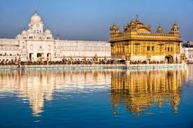

Located in the heart of northern India, Punjab is a state renowned for its vibrant culture, rich history, and agricultural prosperity. Here's an overview of what makes Punjab a captivating destination:
Punjab is steeped in history, with a legacy dating back thousands of years. Explore the ancient city of Amritsar, home to the iconic Golden Temple, the holiest shrine of Sikhism, known for its stunning architecture and spiritual significance.
Discover the historic sites of Punjab, including the majestic forts of Bathinda and Gobindgarh, which bear testimony to the region's rich past and strategic importance.
Immerse yourself in the spiritual atmosphere of Punjab, where Sikhism was born and flourished. Visit the sacred city of Anandpur Sahib, the birthplace of the Khalsa Panth, and witness the vibrant celebrations of festivals like Vaisakhi and Gurpurab.
Experience the soul-stirring rituals of the Sikh religion, including the recitation of Gurbani at gurdwaras, the community kitchen service known as Langar, and the mesmerizing Sikh martial arts display known as Gatka.
Punjab is often referred to as the "Granary of India" due to its fertile soil and extensive agricultural lands. Explore the lush green fields of Punjab, where wheat, rice, and other crops are cultivated in abundance, contributing significantly to the nation's food security.
Witness the traditional farming practices of Punjab, including the colorful festivities of Baisakhi, a harvest festival celebrated with great enthusiasm and fervor across the state.
Experience the legendary hospitality of Punjab, where guests are treated with utmost warmth and generosity. Indulge in the culinary delights of Punjab, known for its rich and flavorful dishes such as Sarson da Saag, Makki di Roti, Butter Chicken, and Amritsari Kulcha.
Explore the bustling streets of cities like Amritsar and Ludhiana, where you can savor authentic Punjabi cuisine in traditional dhabas (roadside eateries) and upscale restaurants alike.
Whether you're drawn to the rich cultural heritage, spiritual atmosphere, agricultural prosperity, or culinary delights, Punjab offers a diverse range of experiences for every traveler. Plan your journey to this vibrant state and immerse yourself in the tradition and prosperity of Punjab.
